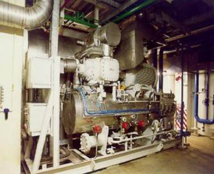
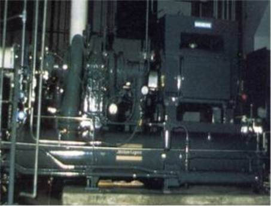

Refrigeration Engineering
We provide the following services, CONTACT US for further details of any of the items listed below;

o Refrigeration System Design including design expertise in
BS 4434
o Refrigeration equipment specification, including tender specifications
o Retrofit appraisal of CFC and HCFC refrigeration plant with environmentally friendly refrigerant e.g. "drop in replacement" options for R12 and R22 with HFC of HC refrigerants
o Optimisation of design and operation of refrigeration plant for energy efficiency
o Design and specification of refrigeration systems using thermal storage
Absorption refrigeration feasibility studies using waste heat including gas turbine exhaust waste heat recovery

Waste Heat Recovery and Absorption RefrigerationIn the European Chemical and Pharmaceutical industries , an average of 8% of a company’s total energy is used for drying processes. A further 8% is used for evaporation. Much of this is done electrically or through the use of live steam. Many of these processes could be done equally well using waste heat, or direct gas fired drying.
Huge cost savings are possible.
The same studies show that almost 40% of energy is used for refrigeration. Much of this refrigeration uses electricity as a primary energy source, for vapour compression systems.
Absorption refrigeration is a viable alternative to vapour compression, where waste heat is available e.g. CHP / co-generation installations.
Do you want to find out more about absorption refrigeration? Contact us to discuss